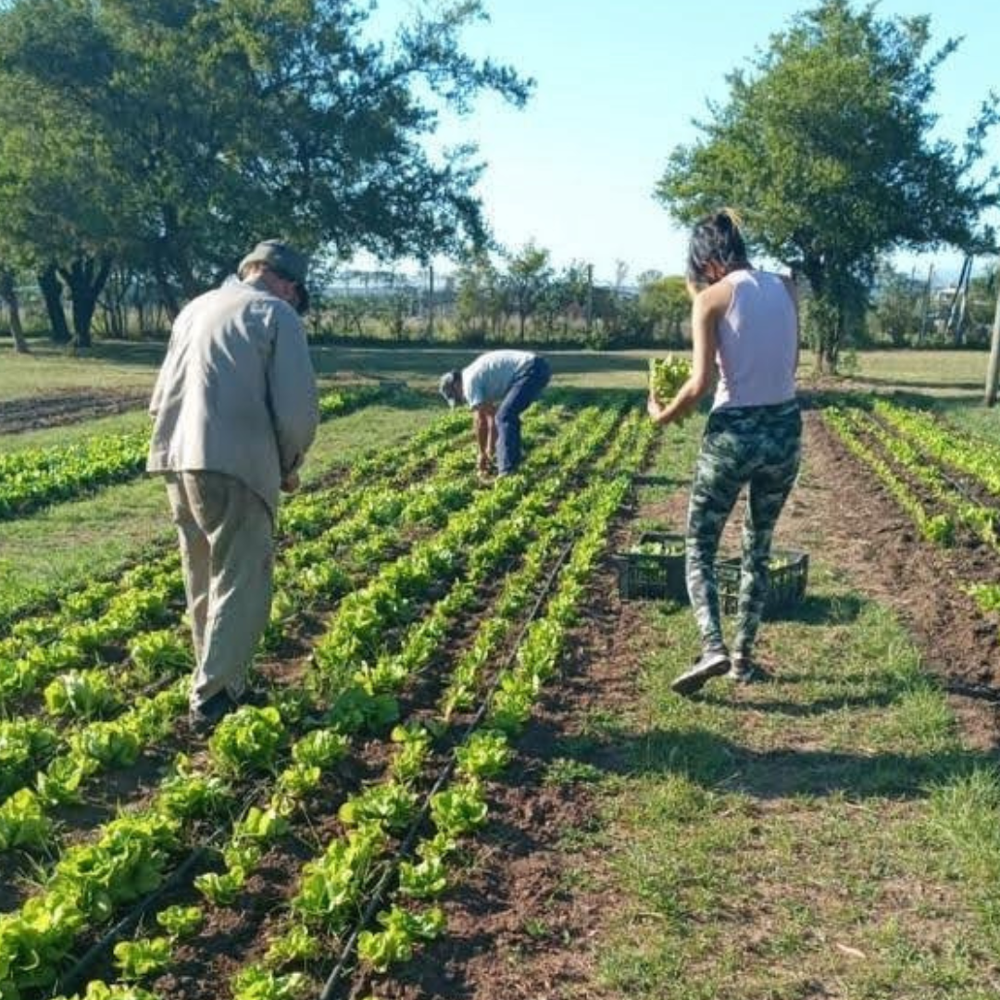

Proyecto de fortalecimiento productivo
 Fortalecemos unidades productivas a través del fomento del desarrollo y el trabajo genuino de trabajadoras y trabajadores de la Economía Popular de la Provincia de Córdoba. Llevamos adelante esta labor en conjunto con el Ministerio de Desarrollo Social de Nación mediante el otorgamiento de herramientas, insumos y bienes de capital. Desde nuestra institución, ofrecemos acompañamiento y asistencia técnica con el fin de iniciar proyectos productivos que mejoren la calidad de vida de las trabajadoras y los trabajadores informales.
En el año 2020 impulsamos proyectos productivos en distintos rubros:
● Proyecto productivo de fortalecimiento a través
de asistencia técnica, equipamiento e insumos a la
unidad productiva de construcción “Construyendo
Dignidad” Barrio Alta Córdoba.
● Proyecto Productivo de fortalecimiento a través de
asistencia técnica, equipamiento e insumos a la
unidad productiva textil “La Paquito” Barrio Colinas
del Cerro.
● Proyecto Productivo de fortalecimiento a través de
asistencia técnica, equipamiento e insumos a la
unidad productiva de planificación “El Maná” Barrio
Ciudad de Mis Sueños.
“36 FAMILIAS INTEGRANTES DE DICHAS UNIDADES
PRODUCTIVAS MEJORARON SUS INGRESOS Y
CALIDAD DE VIDA POR MEDIO DE UN TRABAJO COLECTIVO.”
PROYECTO PRODUCIR TRABAJO, GARANTIZAR DERECHOS: UNIDAD PRODUCTIVA “LA PAQUITO”
Fortalecemos y consolidamos a la Unidad Productiva Textil “La Paquito”, ya existente y con
funcionamiento en el Centro Cultural Patito Feo
del Barrio Colinas del Cerro, a través de
acompañamiento y asistencia técnica.
Se beneficia a 20 trabajadoras por medio de la comercialización de sus propias producciones
textiles permitiendo de esta manera garantizar un
trabajo digno e igualdad de oportunidades a un
sector vulnerable de la comunidad, apuntando a
mejorar su calidad de vida.
BANCO DE HERRAMIENTAS
Fortalecemos iniciativas productivas, de formación y de empleabilidad tanto individuales
como comunitarias de las personas que forman
parte de las unidades productivas, a través del
programa nacional “Banco de Maquinas,
Herramientas y Materiales para la “Emergencia
Social”.
Se adquirieron maquinarias, herramientas y
materiales necesarios para la puesta en marcha y continuidad de las unidades productivas,
con el fin de generar una fuente de ingreso
genuino. En el transcurso del año 2021 se
beneficiaron 200 personas.
PROYECTO UPA
Buscamos crear fuentes estables de trabajo, producir, elaborar, fraccionar y comercializar diferentes productos regionales de la economía popular. A través del proyecto, se procura realizar convenios con pequeños productores, asociaciones, organizaciones y cooperativas con el objetivo de tejer redes y lograr la compra de la materia prima en un estado “crudo”, para su posterior proceso de producción. Las actividades se realizan en la provincia de Córdoba y de Santiago del Estero.